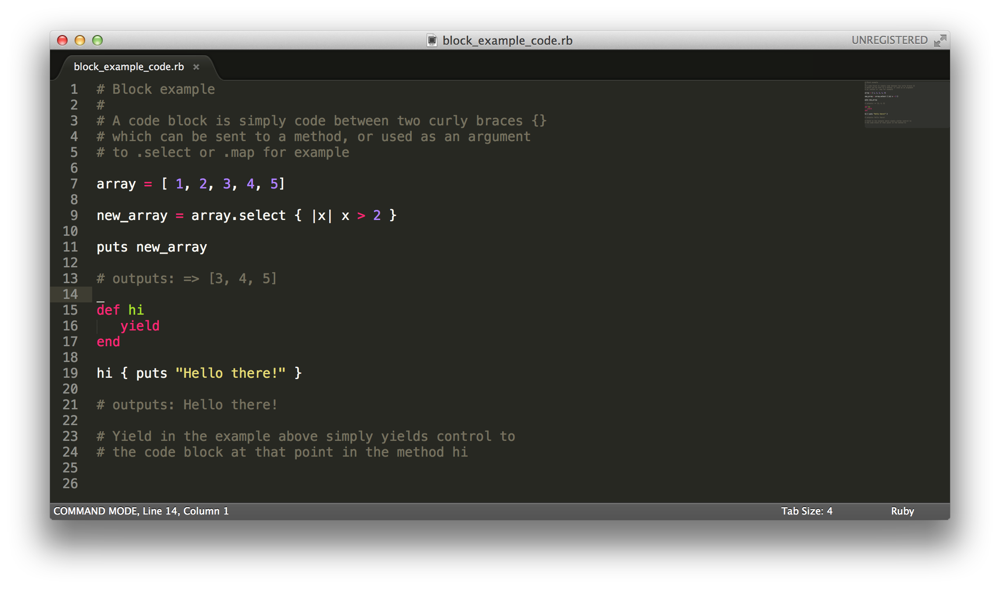
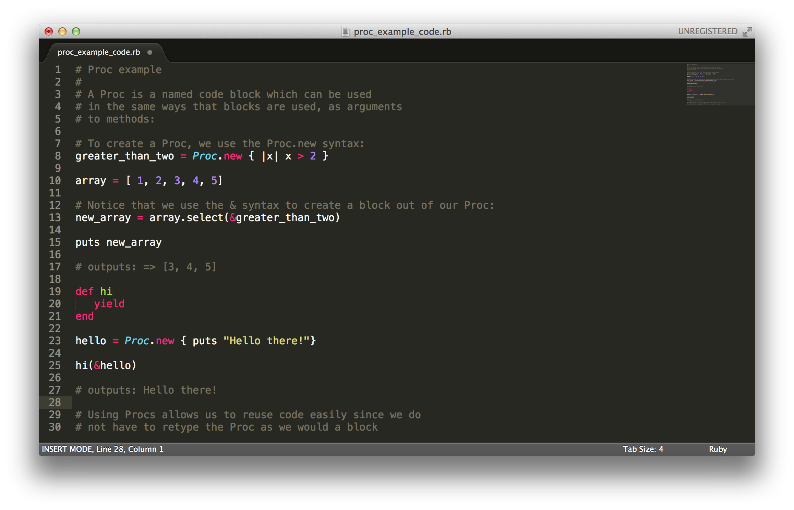
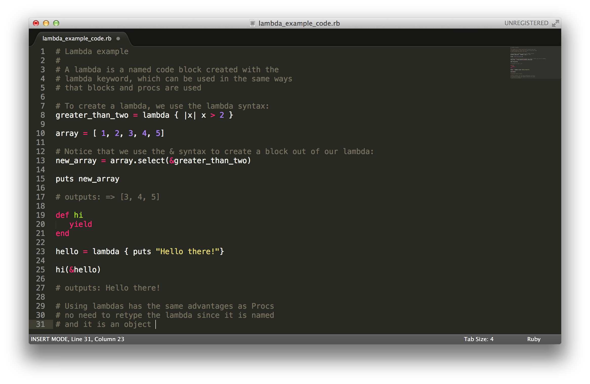

September
11
2014
Today, let's look at some examples of blocks, procs and lambdas. First, take a look at this example about blocks. Blocks are simply pieces of code surrounded by two curly braces:
Now, you may be wondering, that sounds okay, but what is a Proc? A Proc is simply a named block. A Proc is a way of changing a block into an object we can reuse. A handle, if you will, to be able to pick up the block and use it. Blocks are not objects, but Procs are. To create a Proc, use the Proc.new syntax, as shown below:
Now, about lambdas. Lambdas are simply Procs with a different syntax. They also handle returning slightly differently than Procs, but mostly, they are very similar. Let's look at an example involving lambdas to see how similar they are to Procs:
So there you have it! Blocks, Procs and Lambdas. I hope this has been helpful!